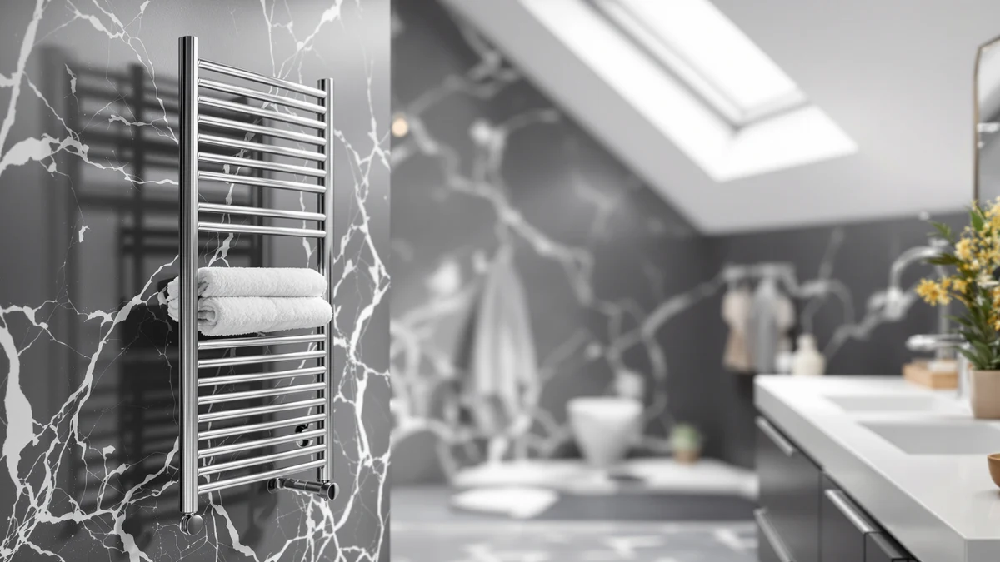

Best Towel Warmer Buying Guide (2026) | Best Towel Warmers
Prices and picks verified as of September 2026. Independent, reader-supported reviews.


Things to Know Before You Buy
- Two main types: open bar racks warm and dry towels between uses, while bucket warmers heat one towel fast on a timer.
- Wattage is low: most units pull 60 to 150 watts, so running one daily costs a few cents.
- Mounting matters: wall racks need a drill and studs, while freestanding racks and buckets just plug in, which suits renters.
- Look for a timer: a 30 to 90 minute auto-shutoff is the single most useful safety and energy feature.
- Match the size to your towels: a bucket built for a hand towel will not hold a king-size bath sheet.
Towel warmers look like a simpler buy than they turn out to be. You see a heated rack in a hotel, you want one at home, and then you hit a wall of plug-in buckets, wall-mount ladders, freestanding towers, and hardwired panels that all promise a warm towel. The right pick depends on whether you rent or own, how big your towels are, and whether you want the towel hot for the next two minutes or dry for the next two days.
You do not need to spend a fortune to get this right. A solid bucket warmer that heats a bath towel in minutes runs well under $100, and most of the picks in this guide sit in that range. Spending more usually buys you capacity, a nicer finish, or a built-in timer, not better heat.
The rest of this guide covers how warmers work, what separates each type, the few specs worth checking before you buy, the mistakes that lead to returns, and how to keep a warmer running for years. By the end you should know which style fits your bathroom and roughly what to pay.
What You Need to Know
A towel warmer is a low-wattage electric heater shaped to hold fabric. Bar racks run warm water or electric elements through metal rails, so the towel rests against gentle heat and dries over 20 to 40 minutes. Bucket warmers wrap the towel around a heated drum or coil inside an insulated shell, which gets it hot in 5 to 10 minutes. Both plug into a standard outlet, and both draw far less power than a hair dryer.
Settle your goal before anything else. If you want to step out of the shower into a hot towel, a bucket warmer wins on speed. If you fight damp, musty towels in a humid bathroom, an open rack wins because it dries the fabric between uses. Plenty of buyers assume the two do the same job and return the wrong one.
Power and safety go together here. You want a model that plugs into a GFCI bathroom outlet, carries a recognized safety listing such as ETL or UL, and ideally includes an auto-shutoff timer. The timer caps how long the unit runs, which protects both your electric bill and your peace of mind. Skip extension cords entirely, since a wet bathroom floor and a daisy-chained cord do not mix.
Finally, set a budget before you shop. You can warm a single towel for around $33 and outfit a family bathroom with a multi-bar rack for roughly $150. Knowing your ceiling keeps you from overbuying features you will never use.
Types and Categories
Most of the towel warmers in this guide fall into four groups, and knowing the differences saves you from buyer's remorse.
Bucket warmers are the plug-in canisters you see in spas. You drop a folded towel inside, set the timer, and pull out a hot towel a few minutes later. They heat fast, need no installation, and travel well, which makes them a favorite for renters and small bathrooms. The trade-off is capacity, since most hold one bath towel at a time.
Wall-mounted bar racks bolt to the wall and hang towels open across heated rails. They warm and dry at the same time, they free up floor space, and they read as built-in. You pay for that with installation, since you need to drill into studs or tile, and the heat is gentler than a bucket.
Freestanding racks deliver the open-bar drying experience without a single hole in the wall. They stand on the floor, plug into a nearby outlet, and move with you when you relocate. They take up more floor area, so they suit medium and larger bathrooms better.
Hardwired and hydronic systems connect to your home wiring or plumbing for a permanent, always-on look. They run cleaner without a visible cord, but they call for an electrician or plumber and a bigger budget. For most people, a plug-in model covers the need for far less.
How to Choose
Work through five questions and the right towel warmer for your bathroom usually becomes obvious.
Do you rent or own? Renters should lean toward bucket warmers or freestanding racks, since neither asks you to drill into a wall you do not own. Owners who want a permanent fixture can consider a wall-mounted or hardwired rack.
How big are your towels? Measure before you buy. A 35-liter bucket swallows a standard bath towel but struggles with an oversized bath sheet. If your household uses thick, jumbo towels, size up to a larger bucket or a multi-bar rack so the fabric heats evenly.
Heat fast or dry slow? A bucket gives you a toasty towel in minutes but does little to dry it. An open rack dries towels over half an hour and keeps them fresh between showers. Choose based on which problem annoys you more.
Does it have a timer? An auto-shutoff timer of 30 to 90 minutes is the feature we tell every buyer to insist on. It controls energy use and removes the worry of leaving a heater running when you leave the house.
What is your budget? A capable bucket starts near $33, mid-range racks land between $75 and $100, and a freestanding tower runs about $150. Decide your ceiling first, then match features to it. Pay attention to a recognized ETL or UL safety listing at every price, since that certification matters more than a fancy finish.
Answer those five and you will have narrowed dozens of listings down to the two or three that fit.
Common Mistakes to Avoid
A few errors send more towel warmers back to the return shelf than any product flaw.
Buyers most often pick the wrong type. Someone wants a dry towel and orders a bucket, or wants instant heat and mounts an open rack, then blames the product. Decide whether you value speed or drying before you add anything to your cart, and you will not be surprised when the box shows up.
The next mistake is ignoring size. People order a compact bucket, then try to cram an oversized bath sheet inside and get uneven heat. Check the listed liter capacity or bar spacing against the towels you actually own.
Plenty of shoppers also skip the timer. A model without auto-shutoff forces you to remember to turn it off, and a forgotten heater wastes power and raises a safety flag. Spend the extra few dollars on a timer.
Installation trips up wall-rack buyers who do not check what is behind the drywall. Hanging a heavy rack on anchors alone, with no stud or proper tile fastener, leads to a unit that sags or pulls loose. Confirm your wall type before you buy a mounted model, or choose a freestanding rack instead.
Last, never run a towel warmer off an extension cord. Plug it directly into a GFCI outlet. That single habit covers most of the safety risk in a wet room.
Care and Maintenance
A towel warmer needs little upkeep, but a few habits keep it working and looking good for years.
Wipe the exterior weekly with a soft, dry cloth. Bathrooms throw off humidity and dust, and a quick pass stops grime from baking onto a warm surface. For a bucket warmer, let the interior cool and dry out between uses so moisture does not collect around the heating element. For an open rack, a damp cloth followed by a dry one keeps the bars from spotting.
Skip harsh chemicals and abrasive pads. A drop of mild soap on a microfiber cloth handles fingerprints and water marks on a stainless or chrome finish without scratching it. Never spray cleaner directly onto a plugged-in unit; spray the cloth instead.
Check the cord and plug every few months. Look for fraying, discoloration, or a loose fit in the outlet, and stop using any warmer whose cord shows damage. The timer and switch should click cleanly, so if either feels mushy, that is your cue to retire the unit.
If you live in a hard-water area, mineral film can build up on a bucket's interior. A wipe with a cloth dampened in diluted white vinegar, followed by a clean-water wipe and full drying, clears it. Treat any towel warmer like the small appliance it is, and it will keep delivering warm towels long after the novelty wears off.
Our Top Picks
If you want to skip the research, these three towel warmers cover the most common needs and price points. Each one earns its spot for a different buyer, so match the verdict to your situation rather than picking by price alone.

Editor’s Pick
Electric Towel Warmer Wall Mounted
A wall-mounted open-bar rack that warms and dries towels at once, with a timer built in. Pick this if you own your place and want a built-in look that fights damp towels every day.
$98.99
Check Price on Amazon
Best Value
SereneLife Luxury Rectangle Towel Warmer
A rectangle bucket warmer that heats a folded bath towel in minutes on a fixed timer cycle. Choose this if you rent or want hot towels fast without drilling anything.
$99.99
Check Price on Amazon
Premium Choice
Serenelife Counter Towel Warmer Luxury
A countertop bucket with a roomy interior that takes oversized bath towels other warmers reject. Go for this if your household uses thick, jumbo towels and counter space is free.
$59.97
Check Price on AmazonAre towel warmers expensive to run?
No.
Should I buy a bar rack or a bucket towel warmer?
Pick a bucket warmer if you want a hot towel fast and you rent or have a small bathroom, since it just plugs in.
Frequently Asked Questions
Are towel warmers expensive to run?
No. Most towel warmers draw between 60 and 150 watts, about the same as a couple of light bulbs. If you run one for an hour a day, you spend only a few cents in most U.S. markets. Bucket warmers cost even less because their timer shuts the unit off after a fixed cycle.
Should I buy a bar rack or a bucket towel warmer?
Pick a bucket warmer if you want a hot towel fast and you rent or have a small bathroom, since it just plugs in. Pick an open bar rack if you want towels to dry between uses and you like a built-in look. Bars warm more gently and usually need wall mounting, while buckets heat one towel at a time on a timer. Our freestanding picks bridge the gap if you want a rack without drilling.
Is it safe to leave a towel warmer on all day?
Leave it unattended only if it has an auto-shutoff timer, and even then we recommend switching it off when you leave the room. Plug the unit straight into a GFCI bathroom outlet rather than an extension cord, keep it clear of standing water, and let the timer handle the rest. Treat a model with no timer like a space heater.
How long does a towel warmer take to heat a towel?
A bucket warmer gets a folded bath towel hot in 5 to 10 minutes. An open bar rack warms more gently and takes 20 to 40 minutes, but it also dries the towel over that time. If speed is your priority, the bucket wins; if you want a fresh, dry towel for the next shower, the rack earns its slower pace.
Do I need an electrician to install a towel warmer?
Not for most models. Bucket warmers and freestanding racks simply plug into a wall outlet, so anyone can set them up. A wall-mounted rack needs a drill and the right anchors for your wall, which is a manageable DIY job. You only need an electrician for hardwired units that connect directly to your home wiring. See our under $100 picks for plug-in options that skip installation entirely.
Verdict
The best warmer is the one matched to how you live. If you own your home and want towels that stay dry and warm every day, the APORDROUCA wall-mounted rack is our top pick, since its open bars and timer handle both jobs and it looks like part of the bathroom rather than a gadget. Renters and anyone who wants a hot towel in minutes should reach for a bucket warmer like the SereneLife rectangle, which plugs in and needs no tools. Households with thick, oversized towels get more room from the SereneLife countertop model. Across every type, hold out for a recognized ETL or UL safety listing, an auto-shutoff timer, and a size that fits the towels you already own. Decide whether you value fast heat or steady drying, set your budget, and one of these will fit. Get that one call right before you start comparing finishes, and the rest of the decision falls into place.